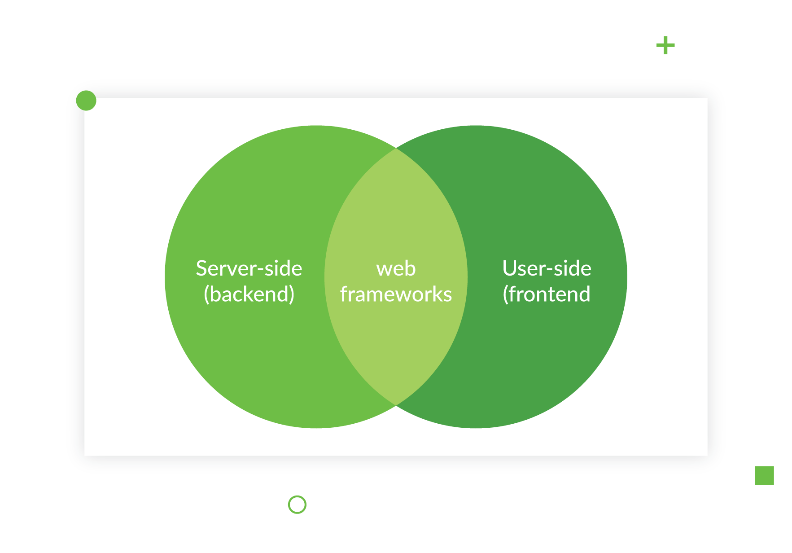
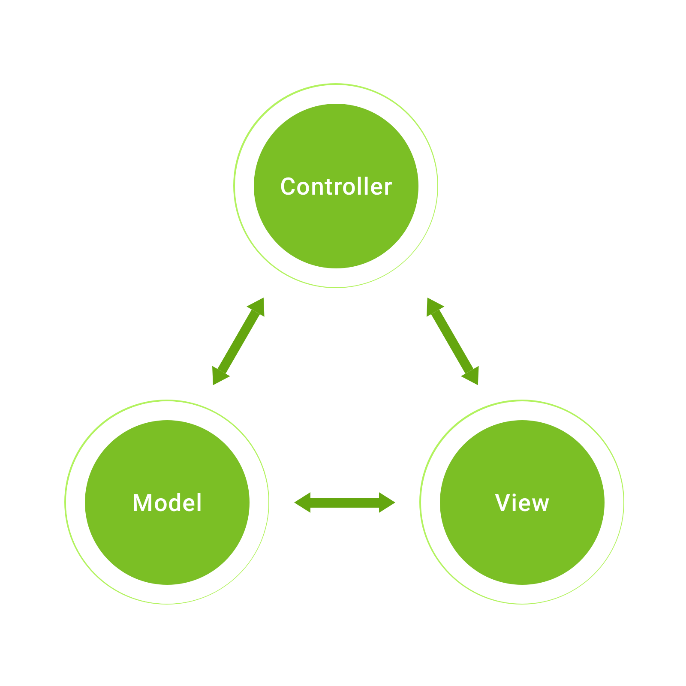
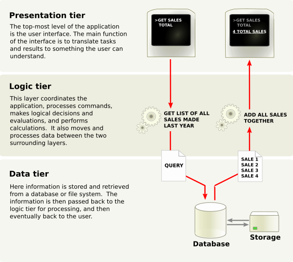

Web framework
Web framework
Posted by RONNIEL REGLOS
A Web Framework (WF) or Web Application Framework (WAF) is a software framework that is designed to support the development of web applications including web services, web resources, and web APIs. Web frameworks provide a standard way to build and deploy web applications on the World Wide Web. Web frameworks aim to automate the overhead associated with common activities performed in web development. For example, many web frameworks provide libraries for database access, templating frameworks, and session management, and they often promote code reuse.[1] Although they often target development of dynamic web sites, they are also applicable to static websites.-[2]
Types of framework architectures
Most web frameworks are based on the model–view–controller (MVC) pattern
Model–view–controller (MVC)
Many frameworks follow the MVC architectural pattern to separate the data model into business rules (the "controller") and the user interface (the "view"). This is generally considered a good practice as it modularizes code, promotes code reuse, and allows multiple interfaces to be applied. In web applications, this permits different views to be presented, for example serving different web pages for mobile vs. desktop browsers, or providing machine-readable web service interfaces.
Push-based vs. pull-based
Most MVC frameworks follow a push-based architecture also called "action-based". These frameworks use actions that do the required processing, and then "push" the data to the view layer to render the results.[5] An alternative to this is pull-based architecture, sometimes also called "component-based". These frameworks start with the view layer, which can then "pull" results from multiple controllers as needed. In this architecture, multiple controllers can be involved with a single view.
Three-tier organization
In three-tier organization, applications are structured around three physical tiers: client, application, and database.The database is normally an RDBMS. The application contains the business logic, running on a server and communicates with the client using HTTP.[10] The client on web applications is a web browser that runs HTML generated by the application layer. The term should not be confused with MVC, where, unlike in three-tier architecture, it is considered a good practice to keep business logic away from the controller, the "middle layer".
Framework applications
Frameworks are built to support the construction of internet applications based on a single programming language, ranging in focus from general purpose tools such as Zend Framework and Ruby on Rails, which augment the capabilities of a specific language, to native-language programmable packages built around a specific user application, such as content management systems (CMS), some mobile development tools and some portal tools.
General-purpose website frameworks
Web frameworks must function according to the architectural rules of browsers and protocols such as HTTP, which is stateless. Webpages are served up by a server and can then be modified by the browser using JavaScript. Either approach has its advantages and disadvantages. Server-side page changes typically require that the page be refreshed, but allow any language to be used and more computing power to be utilized. Client-side changes allow the page to be updated in small chunks which feels like a desktop application, but are limited to JavaScript and run in the user's browser, which may have limited computing power. Some mix of the two is typically used. Applications which make heavy use of JavaScript and only refresh parts of the page, are called single-page applications and typically make use of a client-side JavaScript web framework to organize the code.
You can learn more at W3School
Why should you learn JavaScript?
Learning JavaScript is important for several reasons:
- Foundation of Web Development
- Fundamental Skill of a Web Developer
- Create and customize content on the Web
- Career Opportunities
- Business Solutions
By doing a lot of practice, you will definitely experience errors and bugs in your code, but don't worry, you will overcome them all!